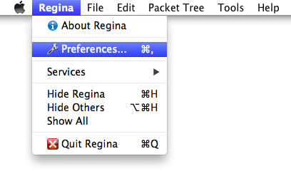
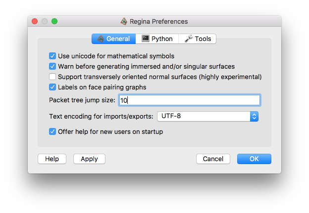
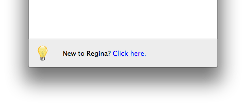

Configuration | |
| Prev | Next |
Table of Contents
You can configure Regina by choosing → from the menu under GNU/Linux and Windows, or → on MacOS X.

There are several panels of options; each is described in its own section below.
The General options panel controls the overall behaviour of Regina.

The settings here are:
- Use unicode for mathematical symbols
Most modern computers now have a rich set of fonts that include subscripts, superscripts and a range of mathematical symbols. By default, Regina will use these symbols to make its display easier to read (e.g., subscripts when describing abelian groups, or superscripts when describing group presentations).
If you cannot read these symbols on your machine (e.g., the subscripts and superscripts are too hard to read, or the fonts do not provide these symbols at all), then you can uncheck this option. This will cause Regina to use “plain” ASCII symbols only, which are supported on every machine.
- Warn before generating non-embedded surfaces
If checked, Regina will ask for confirmation whenever you try to enumerate normal surfaces without selecting embedded surfaces only. Regina asks for confirmation because non-embedded surfaces are typically much slower to generate, far more numerous, and Regina only offers very basic support for them.
- Support transversely oriented normal surfaces
As of version 4.92, Regina offers support for transversely oriented normal surfaces [CT09]. However, this feature is highly experimental and still a work in progress, and things will break if you use it. Because of this, transversely oriented coordinate systems are hidden from users by default.
If you check this box, Regina will offer traversely oriented coordinate systems for creating and viewing normal surfaces. Once again, this is a work in progress, and you should not trust any results in these coordinate systems.
Once this feature becomes stable in a later version of Regina, transversely oriented normal surfaces will be supported by default (and this option will be removed).
- Labels on face pairing graphs
If checked, Regina will label each node in the dual graph of a triangulation with the number of the corresponding top-dimensional simplex.
- Packet tree jump size
Specifies how many steps a packet moves through the tree when you select →→ or →→. See moving packets around for further details.
- Text encoding for imports/exports
Specifies how Regina encodes international characters when importing or exporting data. International characters are letters or symbols not found on a typical English keyboard.
If you are not sure what to use, the default encoding UTF-8 is a good choice (this is a modern standard and can represent all languages). If you only ever use plain English letters and symbols, you do not need to worry about encodings at all.
For more information on text encodings, see imports and exports.
- Offer help for new users on startup
If checked, Regina will show a link to the Getting Started dialog at the bottom of the main window each time Regina starts.

You can view this information at any time by selecting → from the menu.
| Prev | Contents | Next |
| Sample Python Sessions | Up | Python Options |